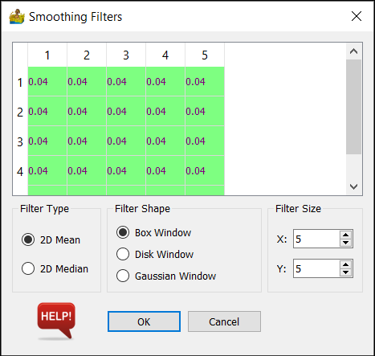

Raster Analysis: Description of Modules¶
Import Raster¶
This module imports raster data using the GDAL library, including ENVI, ER Mapper, Geotiff, Geosoft GXF and Surfer. It is possible to connect multiple imports to another module, thereby creating a ‘merged’ dataset.
Equation Editor¶
The equation editor allows for script operations to be performed on either single or multiple bands of data. It makes use of the powerful numexpr library for the scripting.
Use the variables iall, i1, i2 etc in formulas. The combobox on the interface shows which band is assigned to each variable.
Examples:¶
Sum:
i1 + 1000
Threshold between values 1 and 98, substituting -999 as a nodata value:
where((i1 > 1) & (i1 < 98) , i1, -999)
Commands:¶
Logical operators: &, | , ~
Comparison operators: <;, <=, ==, !=, >=, >
Arithmetic operators: +, -, , /, *, %, <<, >>
where(bool, number1, number2) : number1 if the bool condition is true, number2 otherwise.
sin, cos, tan, arcsin, arccos, arctan, sinh, cosh, tanh, arctan2, arcsinh,
arccosh, arctanh
log, log10, log1p, exp, expm1
sqrt, abs
Smoothing Filters¶
The smoothing filters work by passing a matrix which contains the filter over your raster dataset. The filter type, filter shape and the filter size can all be specified.
Filter Type¶
This can be either 2D median or 2D mean. Note that your choice of filter may affect the number of filter shape options you have.
Filter Shape¶
Box window - this is a regular square matrix with constant values applied to your dataset.
Disk window - this applies a disk of constant values to your dataset
Gaussian Window - this applies a gaussian shaped filter to your dataset. This option is only present for the 2D mean filter type.
Filter Size¶
The options here are dependant on the option chosen in filter shape. They are as follows:
X and Y for the Box window - this is the number of rows and columns which will make up the box window
Radius in samples for the Disk window - this creates a disk of the specified radius. The disk will have 2*radius rows and columns
Standard Deviation for the Gaussian Window - this creates the Gaussian box window where the values have the standard deviation specified.
Normalisation/Scaling¶
Normalisation and scaling are the process of scaling your data to some predetermined range. It is often between 0 and 1, but can be according to a model. Normalisation and scaling are often used when comparing different types of data in routines such as cluster analysis.
Options:
Interval - This simply stretches the data values between 0 and 1.
Mean - This sets the mean of the dataset to 0, and the standard deviation of the dataset to +/- 1
Median - This sets the median of the dataset to 0, and the median absolute deviation of the dataset to +/- 1
8-bit histogram equalisation - this seeks to distribute the data equally across 255 values.
Gradient Calculation¶
The gradient calculation calculates the devrivative of the data in the azimuth specified. It allows for the calcutaion of a conventional horizontal derivative, a derivative ratio (ratio of x and y derivatives) and a vertical derivative. Based on (Cooper and Cowan 2007).
Options:
Azimuth - Available for both calculations. This is the direction of the derivative, in the plane of the data.
Strength Factor - This is the strength of the derivative ratio. A value of 1 is recommended as a starting point.
Visibility Calculation¶
This calculates various visibility measures relating to your data (Cooper 2005). The measures are Total Visibility, Visibility Variation and Visibility Vector Resultant.
Options:
Window Size - This is an odd number specifying the size of window to pass over your data. The visibility is calculated for each window.
Viewing Height - This is the height of the observer above the surface.

Continuation¶
This is an upward and downward continuation for Magnetic and Gravity data. Upward continuation is performed using the standard FFT transform, while downward continuation used a Taylor expansion for extra stability.
The input is a raster dataset.
Options:
Band to Continue - This should be magnetic or gravity data.
Continuation type - This can be upward or downward.
Continuation distance - a positive number denoting the continuation distance.

Data Merge and Resampling¶
This will allow datasets to be merged and resampled to a common cell size. It can also be used for a single dataset to be resampled. The resulting rows and columns of the new grid are displayed.
Options:
Cell size - This represents the size of a square raster grid cell, in the units of the grid (normally meters).

Dataset Reprojection¶
This is a versatile routine allowing for the reprojecting of a dataset between two projections. All projections are obtained from EPSG codes.
Options:
The options are the same for both input and output projections. The choice of projection is obtained through a drop box. The first part of the entry on the drop box shows the datum, and the last part shows the projection.
Should you wish to project to or from degrees, the entry will be Datum / Geodetic Geographic, where Datum is your local datum of choice.

Cut Raster Using Polygon¶
This tool provides a quick way to cut out raster data, using a shape file as the boundary for the cut, and a larger raster file to cut from. You will need to prepare the shape file in another package first.
Extract Profile from Raster¶
This tool provides a quick way to extract a 1D profile from a raster dataset, using a shape file for the coordinates of the profile. You will need to prepare the shape file in another package first. Profiles can be exported or displayed via the context menu.
Raster Data Interpretation¶
This allows for the display of data in a variety of ways common to most image processing packages. The resultant dataset can then be exported as a geotiff for vector interpretation in a GIS package. Each display type is discussed below.

Single Color Map¶
This displays a single band of data by mapping its values to a color map or color table.
Data bands - the band to be displayed is chosen here.
Histogram Stretch - The choice of how to map the data is chosen here. The options are ‘Linear’ (data is unchanged), ‘95% linear, 5% compact’ (compacts 5% of the outliers of the data)and ‘Histogram Equalisation’ (gives all colors the same amount of data samples, so that maximum change is seen in the map)
Color Bar - Here you can choose the color bar to map the colors with.
Contour¶
This has the same options as the single color map, but displays the data using contours instead.
RGB Ternary¶
This option displays three bands, one red, one green and one blue. Because of this, no color map can be chosen, and now three bands must be chosen. Histogram stretch is the same as for previous sections.
CMY Ternary¶
This option displays three bands, one cyan, one magenta and one yellow. As before, no color map can be chosen, and now three bands must be chosen. Histogram stretch is the same as for previous sections.
Sunshade¶
This option applies a sunshade algorithm to the data. Two bands are chosen, the first is the color and the second is the sunshade band. A Histogram stretch for each band can be chosen. A color bar can be chosen for the color band. The shader used is Blinn’s formula (Horn, 1981)
Sun Angle - This is chosen by clicking on a small circular map. A blue dot denotes the sun’s azimuth and elevation.
Sunshade Detail - controls how much sunshade detail is present. Decrease this to increase the detail.
Light Reflectance - controls the light reflectance of the surface.
Save Geotiff¶
Use this to save your final maps as a Geotiff. This will also save two color bars (one vertical and one horizontal) or a ternary color bar. The size of the color bar relates to how big you wish it to be on the paper map.